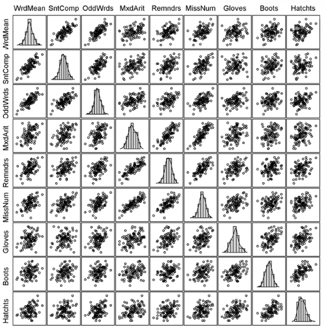
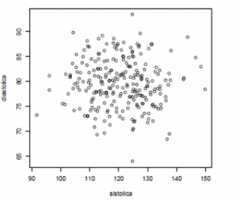
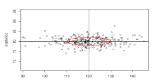
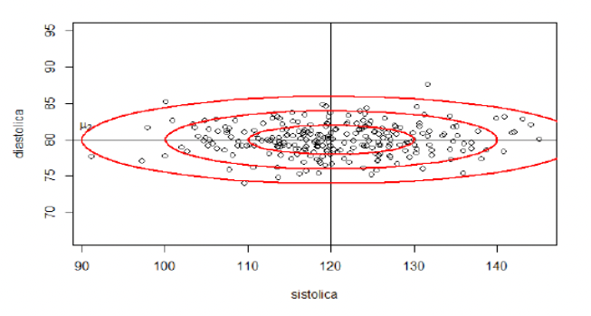
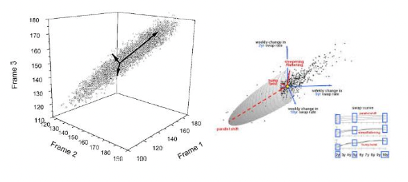

Álgebra Linear Computacional
Aula 07: Normas de Vetores e Matrizes - Parte II
Heitor S. Ramos
ramosh@dcc.ufmg.br
Créditos
Important
Os slides desse curso são fortemente baseados no curso do Fabrício Murai e do Erickson Nascimento
Objetivos
- Conhecer a definição de distância estatística
- Conhecer relação entre normais vetoriais e normas matriciais induzidas
- Saber calcular normas matriciais 1, 2, de Frobenius, infinito
- Conhecer propriedades de normas matriciais
- Saber interpretar a norma espectral (norma-2 matricial)
Referências adicionais
- Wikipedia
- Youtube
Distância estatística
- Precisamos de uma distância diferente da euclidiana para detectar anomalias em dados
- Vamos começar vendo matrizes de dados estatísticos: matrizes com n items e k colunas ou variáveis
Exemplo 1
- Relação entre força de preensão (do aperto de mão) e força do braço para 147 pessoas que trabalham em empregos fisicamente extenuantes
Matrizes de dados
Um vetor para cada indivíduo \(y = (y_1,y_2,\ldots,y_n)\)
As 9 variáveis são escores obtidos em 9 testes de habilidade cognitiva:
- 3 medindo habilidade verbal: Word Meaning, Sentence Completion, and Odd words
- 3 medindo habilidade quantitativa: Mixed Arithmetic, Remainders, and Missing numbers
- 3 medindo habilidade espacial: Gloves, Boots, and Hatchets
Matrizes de dados
Matriz de correlação

- Matriz simétrica e definida positiva
- Elemento \((i,j)\) mede o grau de associação linear entre um par de variáveis (diagonal 1, por quê?)
Desvio padrão
- Desvio padrão (\(\sigma\)) é o tamanho médio do desvio de um dado para a média
Pressão sistólica
- A pressão sistólica mede a força do sangue nas artérias à medida que o coração contrai para impulsionar o sangue
- Se alta, ela pode levar à doença do coração, anginas e doenças vasculares nas pernas
- Pressão sistólica saudável: entre 120 e 140 mmHg
- Pressão sisólica > 140 mmHg: não saudável
- Pressão diastólica deve ficar em torno de 80
- Acima de 100 não é saudável
Pressão de 250 indivíduos
Amostra de \((y_{i1}, y_{i2})\), com \(i = 1,2,\ldots, 250\)
Médias para referência
- 250 instâncias do vetor aleatório: \(Y = (Y_1, Y_2)\)
- Vetor com os valores esperados de cada variável:
\[\mathbb E(Y) = \mathbb E(Y_1,Y_2) = (\mathbb E(Y_1), \mathbb E(Y_2)) = (\mu_1, \mu_2) = \mu\]
Quem está distante do esperado?
- Centro \(\mu = (\mu_1, \mu_2)\) é o perfil esperado ou típico
- Quem está longe do perfil típico? Quem é anômalo?
- Medida baseada na distância euclidiana \(d(y_1,y_2) = \sqrt{(y_1-120)^2+ (y_2-80)^2}\)
- é razoável?
Exagerando um pouco
- E se o segundo atributo for assim? Fazendo o \(\text{aspect/ratio} = 1\).
- Centro \(\mu = (\mu_1, \mu_2)\) continua o mesmo
- Mas quem está distante do centro agora? Quem é anômalo?
Distantes são óbvios, não?
- Mas qual é a medida de distância que estamos usando sem ao mesmo perceber?
- Não é a distância euclidiana!
Pontos à igual distância
- Todos os pontos do círculo estão à igual distância do centro da nuvem de pontos
- Queremos os dois pontos em vermelho à igual distância ESTATÍSTICA do centro que os pontos em azul?
- NÃO! Pontos vermelhos estão ESTATISTICAMENTE muito mais distantes do centro \((\mu_1, \mu_2)\) do que os pontos azuis
Pontos vermelhos mais distantes
- Como fazer os pontos vermelhos mais distantes que os pontos azuis?
- Andar poucas unidades na direção norte-sul te leva pra fora da nuvem dos pontos (vira anomalia)
- Precisa andar MAIS unidades na direção leste-oeste para sair da nuvem de pontos
Pontos vermelhos mais distantes
- Então \(N\) unidades euclidianas na direção leste-oeste valem o MESMO que \(N/k\) na direção norte-sul (onde \(k>1\))
- Como achar esse \(k\)?
- Como equalizar as distâncias?
- Resposta: Medindo distâncias em unidades de DESVIOS PADRÕES
Distância Euclidiana
Medida de dispersão
- Desvio padrão DP: um para cada eixo, um para cada atributo
- DP mede quanto, em média, um atributo aleatório desvia-se do seue valor esperado
- Por exemplo, \(DP=10\) significa:
- Em geral, observações desviam-se de 10 unidades em torno do seu valor esperado
- Às vezes mais de 10 unidades; às vezes menos de 10 unidades
- Em média, um afastamento de 10 unidades
Qual o desvio padrão de cada variável?
- Centro \(\mathbb E(Y) = \mu = (\mu_1, \mu_2) = (120,80)\)
- \(DP_1 = \sigma_1 = ??\)
- \(DP_2 = \sigma_2 = ??\)
Qual o desvio padrão de cada variável?
- Centro \(\mathbb E(Y) = \mu = (\mu_1, \mu_2) = (120,80)\)
- \(DP_1 = \sigma_1 = 10\)
- \(DP_2 = \sigma_2 = 2\)
Distância medida em DP
- \((\mu_1,\mu_2) = (120,80)\) e \((\sigma_1, \sigma_2) = (10,2)\)
- AZUL: afastou-se do centro apenas ao longo do eixo 1 e afastou-se \(15\) unidades, ou \(1.5\sigma_1\)
- VERMELHO: afastou-se do centro apenas ao longo do eixo 2 e afastou-se \(15\) unidades ou \(7.5\sigma_2\)
- o ponto VERMELHO está muito mais distante do centro em termos de DPs
- Mas como fazer com pontos que afastam-se do centro não somente ao longo de um dos eixos?
Distância medida em DP
- \((\mu_1,\mu_2) = (120,80)\) e \((\sigma_1, \sigma_2) = (10,2)\)
- Andar \(n\sigma_1\) ao longo do eixo 1 é EQUIVALENTE a andar \(n\sigma_2\) no eixo 2
- Por exemplo, 20 unidades ao longo do eixo 1 (ou \(2\sigma_1\)) é ESTATISTICAMENTE EQUIVALENTE a 4 unidades ao (ou \(2\sigma_2\)) longo do eixo 2
Distância medida em DP
- Vamos medir o desvio em cada eixo EM UNIDADES DE DESVIO PADRÃO e calcular a distância com esses desvios padronizados
- DESVIO PADRONIZADO ao longo do eixo 1 \[z_1 = \frac{y_1 - \mu_1}{\sigma_1}= \frac{y_1-120}{10}\]
- DESVIO PADRONIZADO ao longo do eixo 2 \[z_2 = \frac{y_2 - \mu_2}{\sigma_2}= \frac{y_2-80}{2}\]
- Distância:
\[\begin{align} d(y_1,y_2) &= \sqrt{z_1^2 + z_2^2} \\ &= \sqrt{\left(\frac{y_1-120}{10}\right)^2 + \left(\frac{y_2-80}{2}\right)^2} \\ &= \sqrt{\left(\frac{y_1-\mu_1}{\sigma_1}\right)^2 + \left(\frac{y_2-\mu_2}{\sigma_2}\right)^2} \\ \end{align}\]
Pontos a igual distância
- NESSA NOVA MÉTRICA, quais os pontos \((y_1, y_2)\) que estão a uma MESMA distância do centro \((\mu_1, \mu_2)\)?
- Tome uma distância fixa (por exemplo, 1)
- Eles formam uma ELIPSE centrada em \((\mu_1, \mu_2)\) e com eixos paralelos aos eixos coordenados 
\[ d(y, \mu) = \sqrt{\left(\frac{y_1-120}{10}\right)^2 + \left(\frac{y_2-80}{2}\right)^2} =1 \]
Tamanho dos eixos
- Distância \(c>0\) do centro: pontos satisfazem a equação
\[ d(y, \mu) = \sqrt{\left(\frac{y_1-120}{10}\right)^2 + \left(\frac{y_2-80}{2}\right)^2} =c \]
- Os eixos têm comprimentos iguais a \(c\sigma_1\) e \(c\sigma_2\). O eixo maior da elipse: variável com maior DP
- Quantas vezes o maior eixo é maior que o eixo menor?
- Se \(\sigma_1\) é o maior DP,
\[\frac{\text{eixo maior}}{\text{eixo menor}} = \frac{c\sigma_1}{c\sigma2} = \frac{\sigma1}{\sigma_2}\]
- Não depende da distância \(c\). Ao variarmos \(c\) teremos elipses concêntricas
Variando a distância
Pontos \((y_1, y_2)\) que estão a uma distância \(c\) igual a 1, 2, 3 do centro \((\mu_1, \mu_2)\)
Jogando fora a raiz quadrada
- Preferimos trabalhar com a distância AO QUADRADO
- Se podemos complicar, por que simplificar?
\[\begin{align} d^2(y,\mu) &= \left(\frac{y_1-\mu_1}{\sigma_1}\right)^2 + \left(\frac{y_2-\mu_2}{\sigma_2}\right)^2 \\ &= \begin{bmatrix}y_1 - \mu_1& y_2- \mu_2\end{bmatrix} \begin{bmatrix}1/\sigma_1^2 & 0 \\ 0 & 1/\sigma_2^2\end{bmatrix}\begin{bmatrix}y_1 - \mu_1 \\ y_2 - \mu_2\end{bmatrix}\\ &= \begin{bmatrix}y_1 - \mu_1& y_2- \mu_2\end{bmatrix} \begin{bmatrix}\sigma_1^2 & 0 \\ 0 & \sigma_2^2\end{bmatrix}^{-1}\begin{bmatrix}y_1 - \mu_1 \\ y_2 - \mu_2\end{bmatrix}\\ &= (y-\mu)^\top \Sigma^{-1}(y-\mu) \end{align}\]
Elipses e distâncias
-Vimos que \[\begin{align} d^2(y,\mu) &= \left(\frac{y_1-\mu_1}{\sigma_1}\right)^2 + \left(\frac{y_2-\mu_2}{\sigma_2}\right)^2 \\ &= (y-\mu)^\top \Sigma^{-1}(y-\mu) \end{align}\] onde
\[ \Sigma = \begin{bmatrix} \sigma_1^2 & 0 \\ 0 & \sigma_2^2\end{bmatrix}\]
é a equação de uma elipse centrada em \(\mu = (\mu_1, \mu_2)\)
- Quando a matriz \(\Sigma\) é DIAGONAL com elementos positivos (com as variâncias \(\sigma_i\)’s), então a elipse tem eixos paralelos aos eixos e o tamanho de cada eixo é proporcional ao \(\sigma_i\) da variável associada
Caso mais realista
- Variáveis são associadas, não são independentes
- Dizemos que são correlacionadas: redundância da informação
- O valor de uma variável dá informação sobre o valor da outra variável
- Pode-se predizer (com algum erro) uma variável em função da outra
Distância elíptica e não circular
- Pelo mesmo raciocínio intuitivo que fizemos anteriormente, a ELIPSE abaixo tende a estar a igual distância do perfil esperado \(\mathbb E(Y) = \mu = (\mu_1,\mu_2)\)
- Pontos estatisticamente equidistantes de \(\mu\) NÃO estão mais numa elipse paralela aos eixos
- A elipse está inclinada seguindo a associação entre as variáveis
Forma quadrática
- Medida de distância é uma FORMA QUADRÁTICA
\[ d^2(y,\mu) = (y-\mu)^\top \Sigma^{-1}(y-\mu)\]
- É a memsa expressão matricial de distância que usamos antes MAS…
- … a matriz não é mais DIAGONAL
Quem é \(\Sigma\)?
- Medida de distância é uma FORMA QUADRÁTICA
\[ d^2(y,\mu) = (y-\mu)^\top \Sigma^{-1}(y-\mu)\]
- Matriz \(\Sigma\) é uma matriz \(2\times 2\) simétrica chamada de matriz de covariância
\[ \Sigma = \begin{bmatrix}\sigma_1^2 & \rho\sigma_1\sigma_2\\ \rho\sigma_1\sigma_2 & \sigma_2^2\end{bmatrix}\]
onde \(\rho = \text{Corr}(Y_1, Y_2)\) é o índice de correlação de Pearson entre \(Y_1\) e \(Y_2\)
- Temos sempre \(-1 \le \rho \le 1\)
- Os elementos fora da diagonal, \(\rho\sigma_1\sigma_2\), são chamados de covariância entre \(Y_1\) e \(Y_2\)
- Costumamos escrever \(\text{Cov}(Y_1,Y_2) = \rho\sigma_1\sigma_2 = \sigma_{12}\)
Relação entre \(\Sigma\) e a elipse
- distância é
\[ d^2(y,\mu) = (y-\mu)^\top \Sigma^{-1}(y-\mu)\]
onde \(\Sigma\) é uma matriz \(2\times 2\) simétrica dada por
\[ \Sigma = \begin{bmatrix}\sigma_1^2 & \rho\sigma_1\sigma_2\\ \rho\sigma_1\sigma_2 & \sigma_2^2\end{bmatrix}\]
- Pontos equidistantes de \(\mu = (\mu_1, \mu_2)\) estão numa elipse
- Eixos da elipse: na direção dos AUTOVETORES da matriz \(\Sigma^{-1}\)
- O tamanho de cada eixo é proporcional à raiz do AUTOVALOR correspondente
Autovetor e autovalor de \(\Sigma^{-1}\)
- Na nossa situação de distância estatística em que usamos a inversa da matriz de covariância como \(\Sigma^{-1}\) temos dois resultados especiais:
- sempre temos dois autovetores ORTOGONAIS entre si
- autovalores são sempre REAIS e POSTIVOS (e portanto podemos tomar sua raiz ou invertê-los)
Autovetores de \(\Sigma\) e \(\Sigma^{-1}\)
- Os autovetores de \(\Sigma\) e \(\Sigma^{-1}\) são os mesmos
Prova
Suponha que \(v\) é autovetor de \(\Sigma\) com autovalor \(\lambda >0\):
\[\Sigma v = \lambda v\]
\[ \Sigma^{-1}\Sigma v = \Sigma^{-1} \lambda v\]
ou seja,
\[ v = \lambda\Sigma^{-1} v\]
ou ainda, como \(\lambda >0\),
\[ \frac{1}{\lambda}v = \Sigma^{-1}v\]
Distância estatística em \(k\) dimensões
- Seja \(Y = (Y_1, Y_2, \ldots, Y_k)\) um vetor aleatório de dimensão \(k\)
- Seja \(\mu = (\mu_1, \mu_2, \ldots, \mu_k)\) seu VETOR-COLUNA de valores esperados
- Seja \(\Sigma\) a matriz \(k\times k\) com a covariância \(\sigma_{ij} = \rho_{ij}\sigma_i\sigma_j\) onde \(\rho_{ij}\) é a correlação entre \(Y_i\) e \(Y_j\)
- Distância estatística:
\[ d^2(y,\mu) = (y-\mu)^\top \Sigma^{-1}(y-\mu)\]
- Pontos equidistantes de \(\mu\) formam um elipsóide em \(k\) dimensões com eixos nas direções dos autovetores de \(\Sigma\) e com tamanhos proporcionais aos seus respectivos autovetores
Caso 3D
Distância estatística em \(k\) dimensões
- \(\Sigma\) é a matriz de covariância \(k \times k\) de um vetor aleatório \(Y\) de dimensão \(k\), temos
- sempre temos \(k\) autovetores ORTOGONAIS entre si
- autovalores são sempre REAIS e POSITIVOS
- Esta afirmação é consequência do teorema espectral
- Para todo ponto \(y\) que não seja o vetor esperado \(\mu\), queremos que a distância \(d^2(y,\mu)\) seja \(>0\)
- Uma matriz com essa propriedade é chamada de positiva definida
Norma-S
Seja \(S\) uma matriz simétrica e definida positiva
Definição Norma-S
\[\Vert x\Vert_S = x^\top S x = \sum_{i,j}x_ix_jS_{ij}\]
Norma de matrizes
Vamos querer comparar “tamanhos” de matrizes Como atribuir um tamanho para as matrizes abaixo?
\[\begin{bmatrix}0.1 &&\\ &0.2&\\&&0.3\end{bmatrix}\, \begin{bmatrix}150 &&\\ &150&\\&&180\end{bmatrix}\, \begin{bmatrix}100 &80&80\\ 90&150&100\\90&100&180\end{bmatrix}\]
Qual o tamanho? Quem é maior?
\[\begin{bmatrix}1 &&\\ &1&\\&&1\end{bmatrix}\, \begin{bmatrix}1000 &\\ &1000\end{bmatrix}\, \begin{bmatrix}1.3 &5.9&-1.6\\ 1.7&6.1&9.7\\2.7&9.1&1.2\\-0.4&2.7&2.8\\2.2&7.2&7.9\end{bmatrix}\]
Norma de Frobenius
A mais simples de todas: - Empilhe as colunas da matriz como um vetor e calcule sua norma L2
\[A = \begin{bmatrix}1.3&5.9&-1.8\\1.7&6.1&9.7\end{bmatrix}\]
\[\Vert A\Vert_F = \sqrt{(1.3)^2+(5.9)^2+(-1.8)^2+(1.7)^2+(6.1)^2+(9.7)^2}\]
\[\Vert A\Vert_F = \sqrt{\sum_{ij}\vert a_{ij}\vert^2}\]
Frobenius via linha/coluna
Outras descrições úteis de Frobenius
\[A_{n\times m} = \begin{bmatrix}\vert&\vert&&\vert\\ a_1&a_2&\ldots&a_m\\\vert&\vert&&\vert\end{bmatrix} = \begin{bmatrix}-&b_1^\top&-\\-&b_2^\top&-\\&\vdots&\\ -&b_n^\top&-\end{bmatrix} \]
\[\begin{align} \Vert A \Vert_F^2 &= \sum_{ij}\vert a_{ij}\vert^2\\ &= \sum_{j=1}^m \Vert a_j\Vert_2^2\\ &= \sum_{i=1}^n \Vert b_i^\top\Vert_2^2\\ &= \text{trace}(A^\top A) \end{align}\]
Normas de matrizes
A norma de uma matriz é uma função \(\Vert \star\Vert\) do conjunto de todas as matrizes complexas (de todas as ordens finitas) para \(\mathbb R\) que satisfaz as seguintes propriedades
- \(\Vert A\Vert \le 0\) e \(\Vert A \Vert = 0 \Leftrightarrow A = 0\)
- \(\Vert \lambda A\Vert = \vert \lambda\vert \Vert A \Vert\) para todos escalar \(\lambda\)
- \(\Vert A + B \Vert \le \Vert A \Vert + \Vert B \Vert\) para matrizes do mesmo tamanho
- \(\Vert AB\Vert \le \Vert A \Vert \Vert B \Vert\) para todas as matriz compatíveis